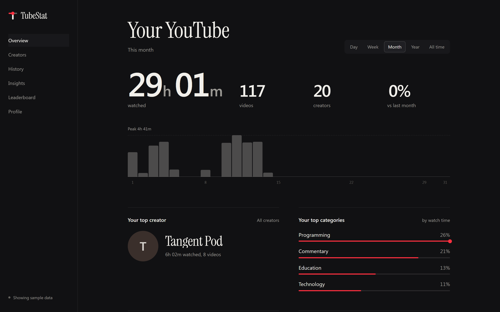
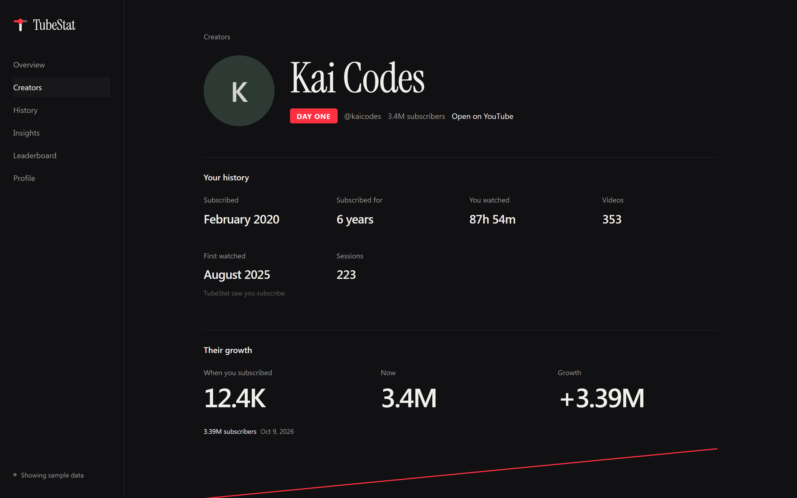
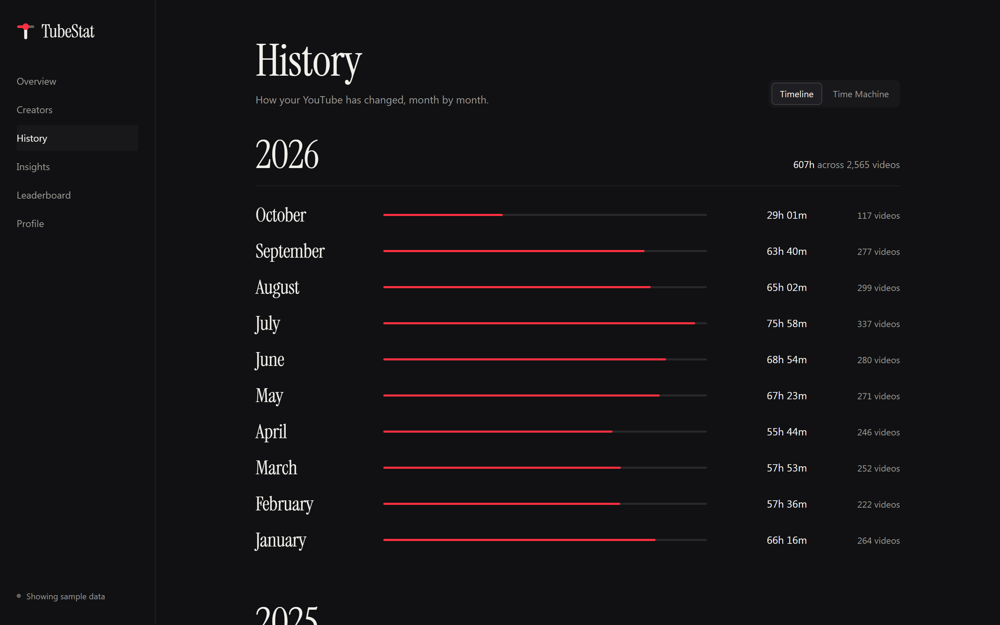
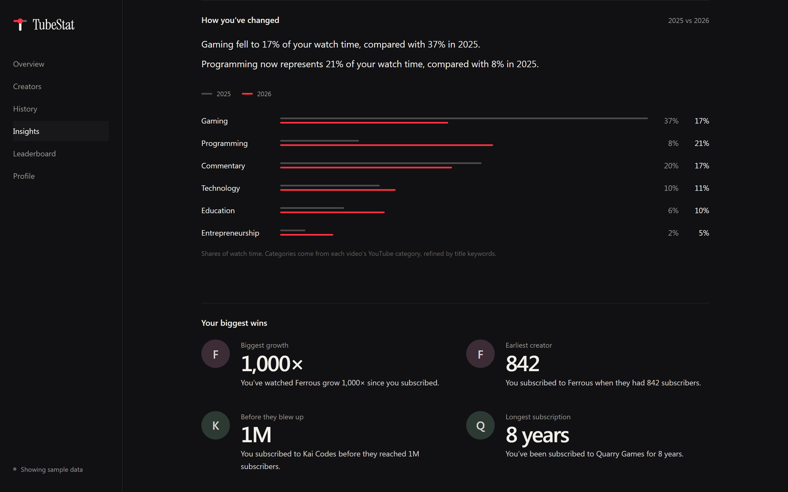
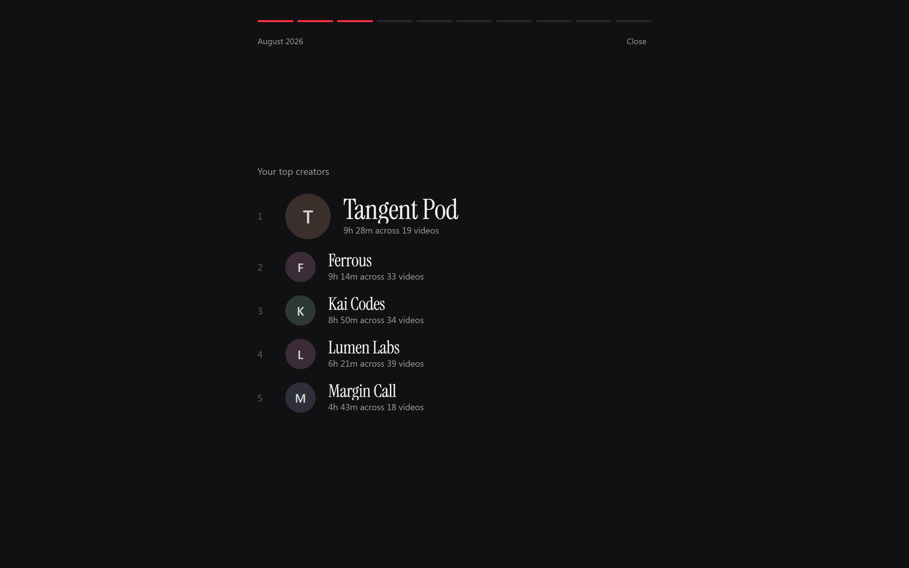
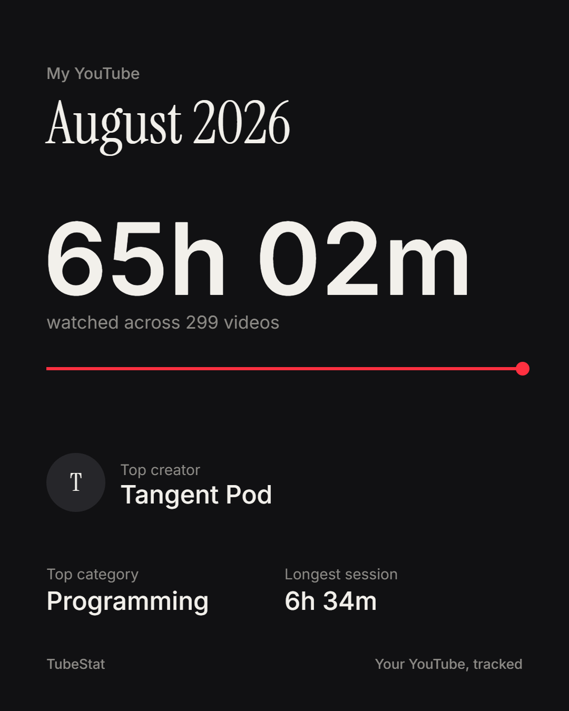
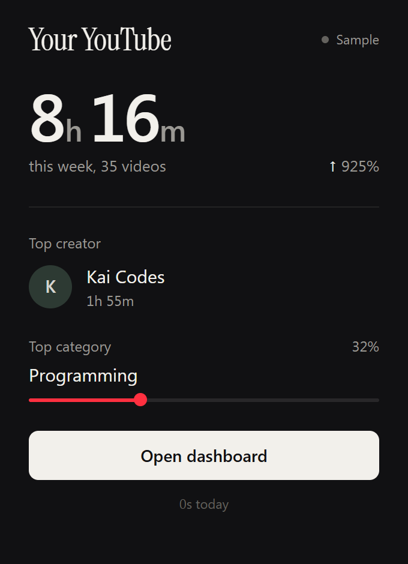

Your YouTube life, tracked.
TubeStat is a Chrome extension that quietly records how you watch YouTube and turns it into a profile of your viewing life: hours, creators, categories, how early you found them, and a Wrapped that’s always up to date. Everything stays on your device.
Free and open source. Works in Chrome, Edge, Brave and Arc. Screens below use sample data.

Creators
I was here before they blew up.
Every creator gets a page about you and them: when you subscribed, how long you’ve been watching, how many hours you’ve spent, and how much they’ve grown since.
- DAY ONEOG Earned from measured subscriber counts, not vibes.
- “You subscribed before 97% of their current audience.” Shown only when the numbers support it.


History and Time Machine
It gets better the longer you keep it.
Every month becomes a page: top creators, categories, your longest session, the video you couldn’t stop watching, the channels you discovered. Jump back to any month with the Time Machine.
Bring your past with you by importing your Google Takeout history on day one.
Insights
Things you didn’t know about yourself.
Plain sentences written from what you actually watched: when you watch most, how your taste shifted from gaming to programming, which three creators take half your time. No guesses about why.



Wrapped and sharing
Your Wrapped, any month you like.
Play back any month or year as a story, then turn it into a card sized for your feed. Friends can compare weekly totals on a leaderboard by swapping a short code. Only the totals, never what you watched.
Honest numbers
Nothing made up.
YouTube doesn’t expose everything, so TubeStat tells you where each number came from and never fills the gaps with guesses.
| What | Status | How |
|---|---|---|
| Watch time, completion, Shorts | Tracked since install | Real playing time. Pauses and ads don’t count, and skipping to the end doesn’t count as finishing. |
| Video, channel, YouTube’s category | Verified | Read from YouTube’s own player as you watch. |
| Subscriber growth | Tracked since first visit | Snapshotted daily. YouTube doesn’t publish past counts, so history starts when TubeStat first sees a creator. |
| When you subscribed | Verified, when available | Captured the moment you click Subscribe, or read from your YouTube account if you connect it. |
| OG status from dates alone | Estimate | Labelled as an estimate, and never turned into a claim about audience size. |
| Viewing before install | Imported | From Google Takeout: videos and dates are real, watch time isn’t known. |
Privacy
Your history stays yours.

On your device
Everything is stored in Chrome’s extension storage on this computer. There’s no TubeStat server and no account.
Nothing uploaded
Viewing data never leaves your device. The only network requests load YouTube thumbnails, and your subscriptions if you choose to connect.
Yours to delete
Export everything as JSON or erase it all in one click. Removing the extension deletes it too.
Install
Two minutes, once.
- Download tubestat-extension.zip and unzip it.
- Open
chrome://extensionsand turn on Developer mode, top right. - Click Load unpacked and choose the unzipped folder.
- Watch YouTube. Your first video appears in the dashboard within seconds.
Prefer to build it yourself? npm install && npm run build, then load the dist folder. Instructions are in the README.